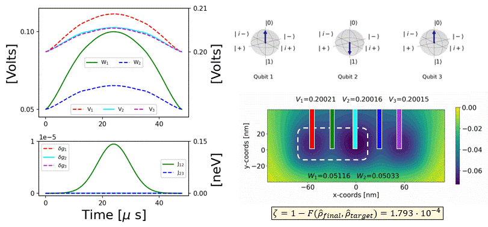
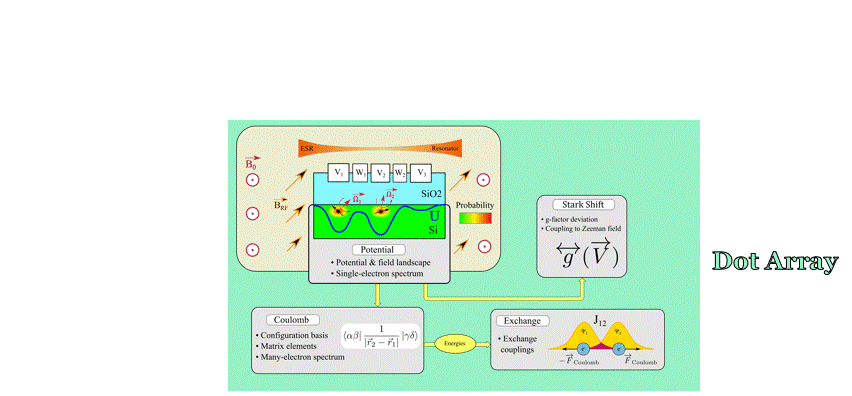

QuDiPy Simulator
About:
QuDiPy (Quantum Dots in Python)
Modules:
QuDiPy
Tutorials:
Voltage pulse design with CSP: 2 dots
QuDiPy tutorial: using the charge stability module
How to contruct dot array system
DotArray Object for a Triple Quantum Dot Array
Effective spin control: pulse design & state evolution
Electron Shuttling
GIFs
In Development:
Unit test tutorial: Introduction
Resources:
Calculate Interpolation Objects in Batches with Job Arrays
How to Construct Dot Array System from HPC Generated Interpolation Objects
DotArray Object for a Quadruple Quantum Dot Array
DotArray: Alternative Class Construction
Finding Best Quartic Fit - 2 dot system
Loading potentials tutorial
How Utilize Potential Lanscape Masking for Isolating Dots in Dot Array
Operator Creation Tutorial
Using the single electron Schrödinger equation solver
Solve 1D and 2D Schödinger Equation on Uniform and Non-Uniform Grids
QuDiPy tutorial: Using the Stark shift module
Understanding Effectvie Parameter Behavior
Webpage Maintenance:
Notes on Configuring a Static Webpage Using Sphinx
QuDiPy Simulator
GIFs
View page source
GIFs

